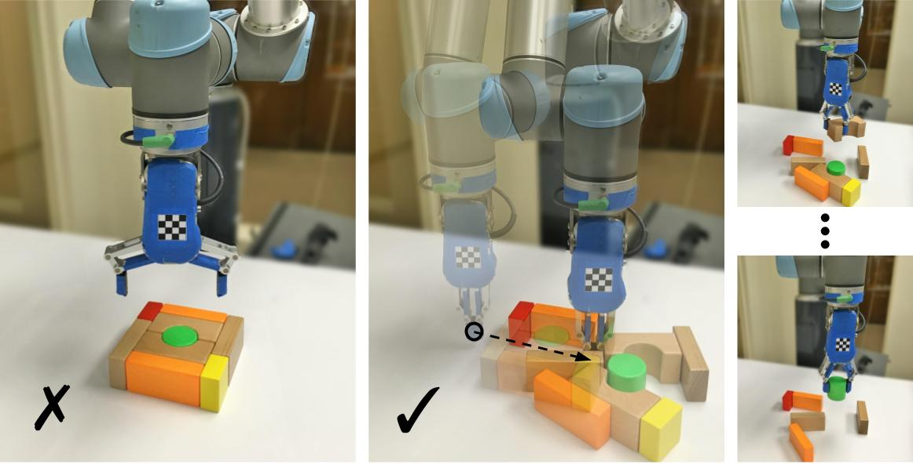
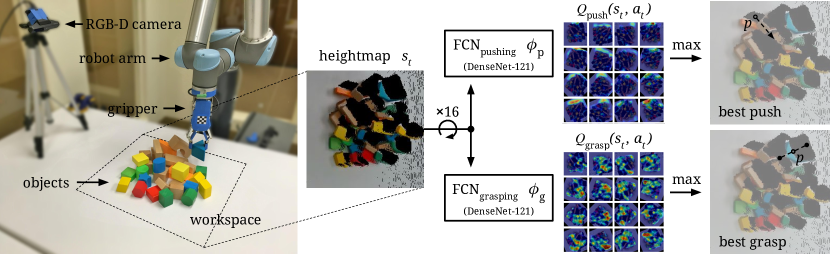
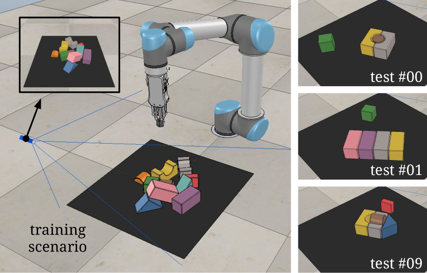
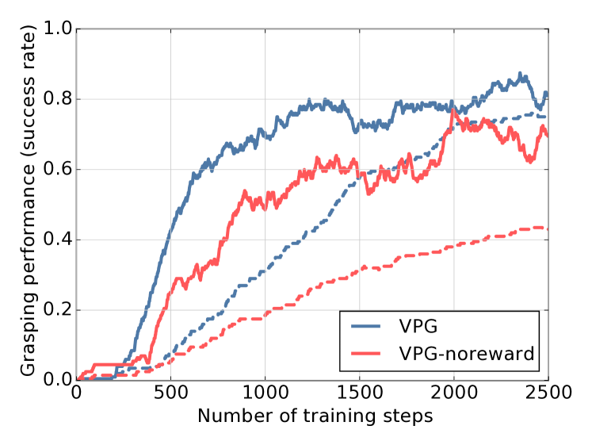
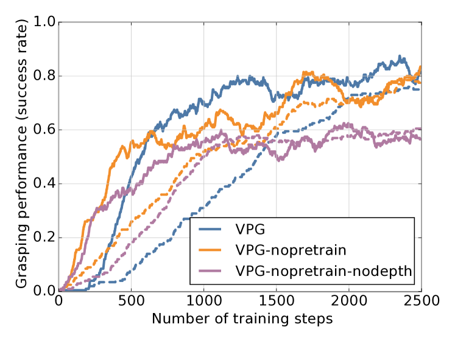
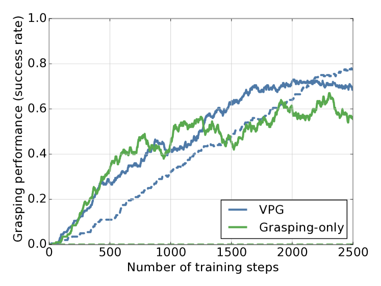
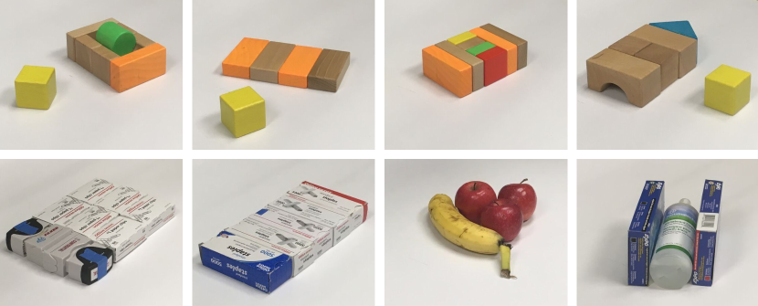

초록
숙련된 로봇 조작은 비파지형(예: 밀기) 행동과 파지형(예: 집기) 행동 사이의 복잡한 시너지 효과를 통해 이점을 얻는다. 예를 들어 밀기는 복잡하게 흐트러진 물체를 재배치하여 로봇 팔과 손가락이 들어갈 공간을 만드는 데 도움을 줄 수 있으며, 마찬가지로 집기는 물체를 이동시켜 밀기 동작을 더 정밀하고 충돌 없이 수행하도록 도울 수 있다. 본 연구에서는 모델 프리(model-free) 심층 강화학습을 통해 이러한 시너지를 아무런 사전 지식 없이 처음부터 발견하고 학습할 수 있음을 보여준다. 본 방법은 시각적 관측에서 행동으로 매핑하는 두 개의 완전 합성곱 신경망(fully convolutional network)을 훈련하는 과정을 포함한다. 하나는 말단 효과기(end effector)의 방향과 위치에 대한 조밀한 픽셀 단위 샘플링에 대해 밀기 행동의 효용을 추론하고, 다른 하나는 집기 행동에 대해 동일한 작업을 수행한다. 두 네트워크는 Q-러닝 프레임워크 내에서 공동으로 훈련되며, 성공적인 집기에서 보상이 제공되는 시행착오를 통해 완전히 자기지도(self-supervised) 방식으로 학습된다. 이러한 방식으로 우리의 정책은 미래의 집기를 가능하게 하는 밀기 동작을 학습하는 동시에, 과거의 밀기를 활용할 수 있는 집기를 학습한다. 시뮬레이션과 실제 환경 모두에서의 피킹 실험을 통해, 본 시스템이 복잡하게 흐트러진 까다로운 상황에서도 복잡한 행동을 빠르게 학습하며, 단 몇 시간의 훈련만으로도 기존 베이스라인 대안들보다 더 높은 집기 성공률과 피킹 효율성을 달성함을 확인한다. 나아가 본 방법이 새로운 물체에도 일반화될 수 있음을 보여준다. 정성적 결과(동영상), 코드, 사전 훈련된 모델 및 시뮬레이션 환경은 http://vpg.cs.princeton.edu에서 확인할 수 있다.
I 서론
숙련된 조작은 비파지형(예: 밀기) 행동과 파지형(예: 집기) 행동 사이의 시너지 효과를 통해 이점을 얻는다. 밀기는 복잡하게 흐트러진 물체를 재배치하여 로봇 팔과 손가락이 들어갈 공간을 만드는 데 도움을 줄 수 있고(그림 1 참조), 마찬가지로 집기는 물체를 이동시켜 밀기 동작을 더 정밀하고 충돌 없이 수행하도록 도울 수 있다.
밀기와 집기 계획 모두에 대해 상당한 연구가 진행되어 왔지만, 이들은 주로 독립적으로 연구되어 왔다. 순차적 조작을 위해 밀기와 집기 정책을 결합하는 것은 비교적 연구되지 않은 문제이다. 밀기는 전통적으로 물체의 포즈(pose)를 정밀하게 제어하는 작업을 위해 연구되어 왔다. 그러나 밀기와 집기 사이의 많은 시너지 관계에서 밀기는 느슨하게 정의된 역할, 예를 들어 두 물체를 분리하거나, 특정 영역에 공간을 만들거나, 물체 군집을 흐트러뜨리는 등의 역할을 수행한다. 이러한 목표는 모델 기반 [1, 2, 3] 또는 데이터 구동형 [4, 5, 6] 접근 방식에서 정의하거나 보상을 부여하기 어렵다.
집기 정책을 학습하는 최근의 많은 성공적인 접근 방식들은 경험으로부터 학습되거나 [7, 8] 집기 안정성 메트릭에 의해 유도된 [9, 10] 어포던스(affordance) 메트릭을 최대화한다. 그러나 각각 독립적으로 학습된 집기와 밀기를 결합하여 행동 시퀀스를 계획하는 방법은 여전히 불분명하다. 도메인 특정 지식을 활용하여 밀기-집기 정책을 지도하기 위한 하드코딩된 휴리스틱이 성공적으로 개발되기도 했지만 [11], 이는 수행할 수 있는 밀기와 집기 간의 시너지 행동 유형을 제한한다.

본 연구에서는 모델 프리 심층 강화학습(특히 Q-러닝)을 통해 경험으로부터 밀기와 집기 사이의 시너지를 발견하고 학습할 것을 제안한다. 우리 시스템의 핵심적인 측면은 다음과 같다.
-
•
우리는 자기지도 방식의 시행착오를 통해 공동 밀기 및 집기 정책을 학습한다. 밀기 행동은 결과적으로 집기를 가능하게 할 때만 유용하다. 이는 밀기 동작에 대해 휴리스틱이나 하드코딩된 목표를 정의하는 기존의 접근 방식들과 대조적이다.
-
•
우리는 시각적 관측을 입력으로 받아 잠재적인 밀기 및 집기 행동에 대한 기대 리턴(즉, Q 값의 형태)을 출력하는 심층 네트워크를 통해 정책을 엔드투엔드(end-to-end)로 훈련한다. 그런 다음 공동 정책은 가장 높은 Q 값을 가진 행동, 즉 현재/미래 집기의 기대 성공률을 최대화하는 행동을 선택한다. 이는 개별 물체를 명시적으로 인식하고 수작업으로 설계된 특징을 기반으로 행동을 계획하는 것 [12]과 대조적이다.
이러한 정식화는 우리 시스템이 비정형 피킹 시나리오에서 물체에 대한 복잡한 순차적 조작(밀기 및 집기 포함)을 실행할 수 있게 하며, 훈련 과정에서 보지 못한 새로운 물체에도 일반화될 수 있도록 한다.
실제 물리 시스템에서 강화학습을 통해 심층 엔드투엔드 정책(예: 이미지 픽셀에서 관절 토크까지)을 훈련하는 것은 지나치게 높은 샘플 복잡도 [13, 14, 15]로 인해 비용과 시간이 많이 소요될 수 있다. 실제 로봇에서 훈련을 다룰 수 있게 만들기 위해, 우리는 행동 공간을 말단 효과기 구동 모션 프리미티브(motion primitive) 세트로 단순화한다. 우리는 이 과제를 픽셀 단위 라벨링 문제로 정식화한다. 여기서 각 이미지 픽셀과 이미지 방향은 장면의 해당 픽셀 3D 위치에서 실행되는 특정 로봇 모션 프리미티브(밀기 또는 집기)에 대응한다. 밀기의 경우 이 위치는 밀기 동작의 시작 위치를 나타내며, 집기의 경우 평행 그리퍼(parallel-jaw gripper)로 집는 동안 두 손가락 사이의 중간 위치를 나타낸다. 우리는 장면의 이미지를 입력으로 받아 모든 픽셀에 대해, 즉 장면의 모든 가시적 표면에 대해 실행되는 모든 로봇 모션 프리미티브에 대해 미래 기대 보상 값의 조밀한 픽셀 단위 예측을 추론하도록 완전 합성곱 신경망(FCN)을 훈련한다. 로봇 프리미티브 행동에 대한 이러한 픽셀 단위 매개변수화(우리는 이를 완전 합성곱 행동-가치 함수(fully convolutional action-value functions) [8]라고 부름)를 통해, 단일 로봇 팔에서 몇 시간 미만의 로봇 작동 시간만으로 효과적인 밀기 및 집기 정책을 훈련할 수 있다.
본 논문의 주요 기여는 데이터 구동형 파지 및 비파지 조작을 연결하는 새로운 관점을 제시하는 것이다. 우리는 경험을 통해 서로에게 도움이 되는 상호 보완적인 밀기 및 집기 정책을 포착하도록 엔드투엔드 심층 네트워크를 훈련하는 것이 가능함을 보여준다. 우리는 시스템의 핵심 구성 요소를 평가하기 위해 시뮬레이션과 실제 환경 모두에서 여러 실험과 소거 연구(ablation study)를 제공한다. 결과에 따르면 밀기 정책은 집기가 성공하는 시나리오의 범위를 넓혀주며, 두 정책이 협력하여 작동함으로써 더 효율적인 피킹을 지원하는 (우리의 예상을 뛰어넘는) 물체와의 복잡한 상호작용(예: 한 번에 여러 블록 밀기, 두 물체 분리하기, 집기를 개선하는 연쇄 반응을 통해 물체 군집 흐트러뜨리기)을 생성함을 보여준다. 추가적인 정성적 결과(로봇 작동 동영상 녹화본), 코드, 사전 훈련된 모델 및 시뮬레이션 환경은 http://vpg.cs.princeton.edu에서 제공된다.
II 관련 연구
본 연구는 로봇 조작, 컴퓨터 비전, 머신러닝의 교차점에 위치한다. 이 분야들의 관련 연구를 간략히 검토한다.
비파지형 조작. 밀기와 같은 비파지형 모션을 계획하는 것은 로봇 조작의 초기 시절로 거슬러 올라가는 근본적인 문제이다. 이 분야의 문헌은 방대하며, 마찰력을 이용해 밀기의 역학을 명시적으로 모델링하는 고전적인 솔루션 [1, 2]에서 일찍이 시작되었다. 고무적이기는 하지만, 이러한 방법 중 다수는 실제 환경에서 유지되지 않는 모델링 가정에 의존한다 [16, 4]. 예를 들어, 물체 표면 전체에 걸친 불균일한 마찰 분포와 마찰의 가변성은 실제 환경에서 마찰 모델링 기반 밀기 솔루션의 잘못된 예측을 초래할 수 있는 요인 중 일부에 불과하다. 최근 연구들이 밀기 역학을 학습하기 위한 데이터 구동 알고리즘을 탐구해 왔지만 [17, 18, 19], 이러한 연구의 대부분은 주로 한 번에 하나의 물체에 대해 안정적인 밀기를 실행하는 데 집중되어 왔다. 심각하게 흐트러진 상태와 마찰 변화에 직면하여 밀기의 더 큰 규모의 결과를 모델링하는 것은 여전히 복잡한 문제이며, 실제 환경에서 최적의 정책을 발견하기 위해 이러한 모델을 효과적으로 사용하는 것은 더욱 어렵다.
집기. 집기 역시 모델 기반 추론 분야에서 잘 연구되어 왔다. 접촉력과 외부 렌치(wrench)에 대한 저항력을 모델링하는 것부터 [20, 21], 물체의 가동성을 제한하는 능력으로 집기를 특성화하는 것까지 [22] 다양하다. 실제 시스템에 이러한 방법을 배포하는 일반적인 접근 방식은 알려진 3D 물체 모델 데이터베이스로부터 집기 동작을 미리 계산하고 [23], 물체 포즈 추정을 위한 포인트 클라우드 정합(point cloud registration)을 통해 실행 시간에 이를 인덱싱하는 과정을 포함한다 [24, 25]. 그러나 이러한 방법들은 일반적으로 물체의 형상, 포즈, 역학 및 접촉점에 대한 지식을 가정하는데, 이는 비정형 환경의 새로운 물체에 대해서는 거의 알 수 없는 정보이다.
더 최근의 데이터 기반 방법들은 학습된 시각적 특징을 활용하여 파지(grasp)를 검출하고, 객체 고유의 지식(즉, 형상, 포즈, 동역학)을 명시적으로 사용하지 않으면서 파지를 감지하는 모델 불가지론적(model-agnostic) 딥 파지 정책 [26, 7, 27, 9, 10, 8]을 훈련하는 가능성을 탐색한다. Pinto 등 [27]은 찌르기(poking)와 같은 보조 작업에 대해 사전 훈련된 모델을 사용하여 이러한 딥 정책의 성능을 향상시킨다. Zeng 등 [8]은 FCN(Fully Convolutional Network)을 사용하여 어포던스(affordance)로 이러한 정책을 효율적으로 모델링하는 것이 실행 시간을 대폭 개선할 수 있음을 보여준다. 이러한 방법들과 유사하게, 우리의 데이터 기반 프레임워크는 모델 불가지론적이지만, 밀기(pushing)와 같은 비파지(non-prehensile) 동작을 통합하여 파지 성능을 향상시킨다는 점이 추가되었다.

파지를 동반한 밀기. 비파지 조작 정책과 파지 조작 정책을 결합하는 것은 흥미롭지만, 연구가 훨씬 덜 이루어진 분야이다. Dogar 등 [11]의 독창적인 연구는 파지 불확실성을 줄이기 위해 푸시-파지(push-grasping, 파지 기본 동작 내에 내장된 비파지 모션)를 위한 강건한 계획 프레임워크뿐만 아니라, 복잡한 환경에서 장애물을 피해 이동하기 위한 추가적인 모션 기본 동작인 쓸기(sweeping)를 제시한다. 그러나 그들의 프레임워크 내 정책들은 여전히 대부분 수작업으로 설계되었다. 이와 대조적으로, 우리의 방법은 데이터 기반이며 자기 지도 학습(self-supervision)을 통해 온라인으로 학습된다.
다른 방법들 [28, 6]은 미리 설계된 파지 알고리즘에 더 유리한 대상 위치로 객체를 이동시키기 위해 밀기 동작의 모델 프리(model-free) 계획을 탐색한다. 이러한 파지 알고리즘의 동작은 일반적으로 수작업으로 설계되고 고정되어 있으며 사전에 잘 알려져 있다. 이 지식은 주로 밀기 정책의 설계나 훈련을 도울 수 있는 구체적인 목표(예: 대상 위치)를 정의하는 데 사용된다. 그러나 데이터 기반의 모델 불가지론적 파지 정책(경험으로부터 최적의 행동이 발현되는 방식)에 대해 유사한 목표를 정의하는 것은 덜 명확해진다. 왜냐하면 이러한 정책들은 더 많은 데이터가 쌓임에 따라 시간이 지남에 따라 지속적으로 학습하고, 변화하며, 행동을 적응시키기 때문이다.
우리 연구와 더 밀접하게 관련된 것은 Boularias 등 [12]의 연구로, 수작업으로 설계된 특징으로 표현된 밀기 및 파지 제안 중에서 선택하도록 제어 정책을 훈련하기 위해 강화 학습을 사용하는 것을 탐색한다. 그들은 먼저 이미지를 객체로 분할하고, 밀기 및 파지 동작을 제안하며, 각 동작에 대해 수작업으로 조정된 특징을 추출한 다음, 예상 보상이 가장 높은 동작을 실행하는 파이프라인을 제안한다. 고무적이기는 하지만, 그들의 방법은 인지 및 제어 정책을 별도로 모델링하며(종단간 방식이 아님), 밀려진 객체의 움직임을 예측하고 미래의 파지에 미치는 이점을 추론하기 위해 모델 기반 시뮬레이션에 의존한다(이러한 예측이 밀기 정책에 제공되는 두 가지 "특징"이다). 또한 주로 볼록한(convex) 객체에 작동하도록 조정되었으며, 단 두 개의 객체(상자 옆의 원기둥)만 있는 하나의 시나리오에서만 시연되었다. 이와 대조적으로, 우리는 종단간(end-to-end) 심층 신경망을 통해 인지 및 제어 정책을 훈련하며, 객체의 형상이나 동역학에 대한 어떠한 가정과 모델도 필요로 하지 않고(model-free), 우리의 공식화가 수많은 객체(최대 30개 이상)가 있는 다양한 테스트 케이스에서 작동할 뿐만 아니라 새로운 객체와 시나리오에도 빠르게 일반화될 수 있음을 보여준다. 우리가 아는 한, 우리의 연구는 시각적 관찰부터 행동에 이르기까지 종단간으로 작동하는 심층 신경망을 통해 상호 보완적인 밀기 및 파지 정책의 강화 학습을 수행하는 최초의 모델 프리 시스템이다.
III Problem Formulation
우리는 파지를 위한 밀기(pushing-for-grasping) 작업을 마르코프 결정 과정(Markov decision process)으로 공식화한다. 시간 의 임의의 주어진 상태 에서, 에이전트(즉, 로봇)는 정책 에 따라 행동 를 선택하고 실행한 다음, 새로운 상태 로 전이하고 그에 상응하는 즉각적인 보상 를 받는다. 우리 로봇 강화 학습 문제의 목표는 미래 보상의 기대 합을 최대화하는 최적의 정책 을 찾는 것이며, 이는 시간 부터 까지 무한 시간 지평(infinite-horizon)에 걸친 미래 수익의 감쇄합 로 주어진다.
본 연구에서는 시간 의 상태 에서 행동 를 취할 때의 기대 보상을 측정하는 행동 가치 함수(즉, Q-함수) 을 최대화하여 행동을 선택하는 탐욕적 결정론적 정책 을 훈련하기 위해 오프 플래시(off-policy) Q-러닝의 사용을 조사한다. 공식적으로, 우리의 학습 목표는 고정된 타겟 값 에 대한 의 시간차 에러(temporal difference error) 를 반복적으로 최소화하는 것이다:
여기서 은 사용 가능한 모든 행동의 집합이다.
IV Method
이 섹션에서는 우리의 Q-러닝 공식화, 네트워크 아키텍처 및 훈련 프로토콜에 대한 세부 정보를 제공한다.
IV-A 상태 표현
우리는 각 상태 을 시간 에서의 장면의 RGB-D 높이맵 이미지 표현으로 모델링한다. 이 높이맵을 계산하기 위해, 고정 장착된 카메라로부터 RGB-D 이미지를 획득하고, 데이터를 3D 포인트 클라우드로 투영한 다음, 중력 방향으로 위쪽으로 직교 역투영하여 색상(RGB) 채널과 바닥으로부터의 높이(D) 채널을 모두 갖는 높이맵 이미지 표현을 구성한다(그림 2 참조). 높이맵의 가장자리는 피킹을 위한 에이전트 작업 공간의 경계에 따라 미리 정의된다. 우리의 실험에서 이 영역은 m 크기의 테이블 상판 표면을 포함한다. 우리의 높이맵은 의 픽셀 해상도를 가지므로, 각 픽셀은 에이전트 작업 공간에서 3D 공간의 mm 수직 기둥을 공간적으로 나타낸다.
IV-B Primitive Actions
우리는 각 행동 을 상태 의 높이맵 이미지 표현의 픽셀 으로부터 투영된 3D 위치 에서 실행되는 모션 기본 동작(motion primitive behavior) (예: 밀기 또는 파지)로 매개변수화한다:
우리의 모션 기본 동작은 다음과 같이 정의된다:
밀기(Pushing): 은 개 방향 중 하나로 10cm 밀기 동작의 시작 위치를 나타낸다. 밀기 궤적은 직선이다. 이는 우리의 실험에서 닫힌 두 손가락 그리퍼의 끝부분을 사용하여 물리적으로 실행된다.
파지(Grasping): 은 개 방향 중 하나로 위에서 아래로 수행하는 평행 조(parallel-jaw) 파지의 중간 위치를 나타낸다. 파지 시도 중에 두 손가락은 손가락을 닫기 전에 보다 3cm 아래로(중력 방향으로) 이동을 시도한다. 두 기본 동작 모두에서 로봇 팔 모션 계획은 안정적이고 충돌이 없는 역기하학(IK) 해법 [29]을 통해 자동으로 실행된다.
IV-C 완전 합성곱 행동-가치 함수 학습 (Learning Fully Convolutional Action-Value Functions)
본 연구에서는 Q-함수를 두 개의 피드포워드 완전 합성곱 신경망(Fully Convolutional Network, FCN) [31], , 으로 모델링하여 바닐라 심층 Q-네트워크(DQN) [30]를 확장한다. 각 FCN은 개별 모션 프리미티브 행동(각각 밀기와 집기)에 대응한다. 각 개별 FCN 은 상태의 하이트맵(heightmap) 이미지 표현 을 입력으로 받아, 과 동일한 이미지 크기 및 해상도를 가진 Q-값의 조밀한 픽셀 단위 맵을 출력한다. 여기서 픽셀 에서의 각 개별 Q-값 예측은 인 3D 위치 에서 프리미티브 를 실행할 때의 미래 기대 보상을 나타낸다. 이러한 공식화는 Q-러닝과 시각적 어포던스(affordance) 기반 조작 [8]의 직접적인 결합이다.
두 FCN 과 은 동일한 네트워크 아키텍처를 공유한다. 즉, ImageNet [33]으로 사전 학습된 두 개의 병렬 121레이어 DenseNet [32]에 이어, 채널별 연결(concatenation)과 비선형 활성화 함수(ReLU) [34] 및 공간 배치 정규화(spatial batch normalization) [35]가 삽입된 2개의 추가 합성곱 레이어를 거친 후, 쌍선형 업샘플링(bilinearly upsampled)을 수행한다. 하나의 DenseNet 타워는 하이트맵의 컬러 채널(RGB)을 입력으로 받고, 다른 타워는 하이트맵의 채널별로 복제된 깊이 채널(DDD)(평균을 빼고 표준편차로 나누어 정규화됨)을 입력으로 받는다.
밀기와 집기를 위한 방향성 모션 프리미티브 학습을 단순화하기 위해, 입력 하이트맵 을 개의 방향(의 서로 다른 배수)으로 회전하여 다양한 방향을 고려한 다음, 회전된 하이트맵에서 수평 밀기(오른쪽 방향)와 집기만을 고려한다. 따라서 각 FCN 의 입력은 개의 회전된 하이트맵이며, 총 출력은 Q-값의 32개 픽셀 단위 맵이다(서로 다른 방향의 밀기에 대해 16개, 서로 다른 방향의 집기에 대해 16개). Q-함수를 최대화하는 행동은 32개의 모든 픽셀 단위 맵에서 가장 높은 Q-값을 가진 프리미티브와 픽셀 이다.
상태 및 행동 공간 모두에 대한 픽셀 단위 매개변수화는 FCN을 Q-함수 근사기로 사용할 수 있게 하며, 이는 몇 가지 장점을 제공한다. 첫째, 각 행동에 대한 Q-값 예측은 이제 다른 행동뿐만 아니라 상태의 입력 관측에 대해서도 명확한 공간적 국소성(spatial locality) 개념을 갖는다(e.g. 수용장(receptive field)을 통해). 둘째, FCN은 픽셀 단위 연산에 효율적이다. 본 네트워크 아키텍처 의 각 순방향 패스(forward pass)는 실행하는 데 평균 75ms가 소요되며, 이를 통해 2.5초 이내에 가능한 모든 1,605,632개(i.e. ) 행동에 대한 Q-값을 계산할 수 있다. 마지막으로, 말단 효과기(end effector) 위치(픽셀 단위 샘플링)와 방향( 회전을 통해)의 매개변수화 덕분에 합성곱 특징이 여러 위치와 방향에 걸쳐 공유될 수 있으므로(i.e. 병진 및 회전에 대한 등가성(equivariance)), 본 FCN 모델은 더 적은 학습 데이터로도 수렴할 수 있다.
IV-D 보상 (Rewards)
본 연구의 강화학습 보상 체계는 단순하다. 집기가 성공하면 을 부여하고(집기 시도 후 그리퍼 손가락 사이의 대척점 거리(antipodal distance)에 임계값을 적용하여 계산), 환경에 감지할 만한 변화를 준 밀기에 대해서는 을 부여한다(하이트맵 간의 차이의 합이 특정 임계값 을 초과하면 변화가 감지된 것으로 판단, 즉 ). 내재적 보상(intrinsic reward) 은 밀기가 미래의 집기를 가능하게 하는지 여부를 명시적으로 고려하지 않는다는 점에 유의한다. 대신, 단순히 시스템이 변화를 일으키는 밀기를 수행하도록 장려한다. 밀기와 집기 사이의 시너지는 주로 강화를 통해 학습된다(Sec. V-C의 실험 참조).
IV-E 학습 세부사항 (Training details)
본 연구의 Q-러닝 FCN은 매 반복 마다 후버 손실 함수(Huber loss function)를 사용하여 학습된다:
여기서 은 반복 에서의 신경망 매개변수이며, 타깃 네트워크 매개변수 는 개별 업데이트 사이에 고정된 상태로 유지된다. 실행된 행동 의 가치 예측이 계산된 단일 픽셀 과 네트워크 를 통해서만 그래디언트를 전달한다. 반복 에서의 다른 모든 픽셀은 0의 손실로 역전파된다.
본 연구에서는 모멘텀을 적용한 확률적 경사 하강법(SGD)을 사용하여 FCN 을 학습시키며, 고정 학습률 , 모멘텀 0.9, 가중치 감쇠(weight decay) 를 사용한다. 모델은 Intel Xeon CPU E5-2699 v3(2.30GHz)와 NVIDIA Titan X가 탑재된 환경에서 PyTorch로 학습된다. 멱법칙 분포(power-law distribution)로 근사된 확률적 순위 기반 우선순위 지정을 사용하는 우선순위 지정 경험 재생(prioritized experience replay) [38]을 사용하여 학습한다. 탐색 전략은 -그리디(greedy)이며, 는 0.5로 초기화된 후 학습 과정 동안 0.1로 감쇄된다. 미래 할인율(future discount) 은 0.5로 일정하게 유지된다.
실험(Sec. V)에서, 모든 모델을 동일한 절차의 자기 지도 학습(self-supervision)을 통해 학습시킨다. 개의 객체(i.e. 장난감 블록)를 무작위로 선택하여 로봇 앞의 m 작업 공간에 떨어뜨린다. 그런 다음 로봇은 작업 공간에 객체가 없어질 때까지 시행착오를 통해 자동으로 데이터 수집을 수행하며, 이 시점에 다시 개의 객체를 무작위로 작업 공간에 떨어뜨린다. 시뮬레이션 에서 수행되는 반면, 실제 환경 설정 에서 수행된다.
IV-F 테스트 세부사항 (Testing details)
테스트 시간 동안 본 정책은 그리디 결정론적(greedy deterministic)이므로, 환경에 아무런 변화가 없어 상태 표현(및 가치 추정치)이 동일하게 유지되는 동안 동일한 행동을 반복적으로 실행하여 고착 상태에 빠질 가능성이 있다. 방문 횟수를 기반으로 행동에 가중치를 단순하게 부여하는 방식은 행동 공간의 픽셀 단위 매개변수화로 인해 비효율적일 수 있다. 따라서 이 문제를 완화하기 위해, 테스트 중에 에서 네트워크에 작은 학습률을 처방하고 각 행동을 실행한 후에도 네트워크를 통해 그래디언트를 계속 역전파한다. 평가 목적을 위해, 각 새로운 실험 테스트 실행 전에 네트워크 가중치를 원래 상태(학습 후 및 테스트 전)로 재설정한다. 이는 작업 공간의 모든 객체가 성공적으로 집어졌을 때(i.e. 완료) 또는 환경에 변화를 주지 않는 연속적으로 실행된 행동의 횟수가 10회를 초과할 때로 표시된다.
V 실험 (Experiments)
제안된 접근법을 검증하기 위해 일련의 실험을 수행하였으며, 이를 집기를 위한 시각적 밀기(Visual Pushing for Grasping, VPG)라 부른다. 실험의 목표는 세 가지이다. 1) 모션 프리미티브로서 밀기를 추가하는 것이 객체를 성공적으로 집을 수 있는 시나리오의 범위를 확장할 수 있는지 조사하는 것(i.e. 밀기가 집기에 도움이 되는지 여부), 2) 동시에 학습되는 다른 집기 정책의 미래 기대 성공으로부터 주로 지도를 받아 밀기 정책을 학습시키는 것이 가능한지 테스트하는 것, 3) 본 공식화가 실제 시스템에서 시각적 관측으로부터 직접 효과적이고 비자명한 '집기를 위한 밀기(pushing-for-grasping)' 정책을 학습할 수 있음을 보여주는 것이다.
V-A 기존 베이스라인 방법들 (Baseline Methods)
이러한 목표를 해결하기 위해, 우리는 VPG의 집기(picking) 성능을 다음과 같은 베이스라인 접근법들과 비교한다:
반응형 움켜쥐기 전용 정책(Reactive Grasping-only Policy, Grasping-only)은 IV절에서 설명한 제안 방법과 동일한 픽셀 단위 상태 및 행동 공간 구성을 사용하지만, 움켜쥐기만을 위해 0과 1 사이의 픽셀 단위 어포던스(affordance) 값을 추론하도록 (시시착오를 통한) 이진 분류로 지도 학습된 단일 FCN을 사용하는 움켜쥐기 정책이다. 이 베이스라인은 매 타임 스텝마다 즉각적인 움켜쥐기 어포던스 값을 최대화하는 행동을 따르는 탐욕적 결정론적 정책(greedy deterministic policy)이다 . 이 베이스라인은 최신 탑다운 평행 그리퍼 움켜쥐기 알고리즘 [8]의 자기지도 학습 버전과 유사하다. 공정한 비교를 위해, 우리는 ImageNet [33]으로 사전 학습된 DenseNet [32]을 사용하여 해당 방법을 확장한다.
반응형 밀기 및 움켜쥐기 정책(Reactive Pushing and Grasping Policy, P+G Reactive)은 이전 베이스라인의 확장 버전이지만, 밀기를 위한 0과 1 사이의 픽셀 단위 어포던스 값을 추론하기 위해 추가적인 FCN을 사용한다. 두 네트워크 모두 자기지도 학습 기반의 시행착오를 통한 이진 분류로 학습되며, 여기서 밀기는 (IV-D절에서 설명한 대로) 변화 감지(change detection)로부터 얻은 이진 값으로 명시적으로 지도 학습된다. 변화 감지는 밀기에 대한 가장 단순한 형태의 직접 지도 학습이지만, 안정적인 학습을 유지하기 위해 탐색 전략에 더 높은 값이 필요하다. 이 정책은 (밀기 또는 움켜쥐기 FCN 중 하나에서 나오는) 즉각적인 어포던스 값을 최대화하는 행동을 따른다.
앞서 언급한 두 베이스라인은 장기적인 전략을 계획하지 않고, 대신 현재 상태 에서 계산된 어포던스를 기반으로 탐욕적으로 행동을 선택한다는 점에서 반응형(reactive)이다. 이 베이스라인들에 대한 우리의 학습 최적화 매개변수는 VPG의 매개변수와 동일하게 유지된다.
V-B 평가 지표
우리는 시스템이 새로운 물체 배치(Sec. IV-F에 설명됨)를 가진 테이블에서 물체를 집어서 치워야 하는 일련의 테스트를 실행하여 방법들을 테스트한다.
각 테스트에 대해, 우리는 회() 실행한 후 3가지 지표로 성능을 평가한다: 1) 10회 연속 실패하지 않고 모든 물체를 집어 올려 작업을 완료하는 정책의 능력을 측정하는 회 테스트 실행 동안의 평균 완료율(%), 2) 완료당 평균 움켜쥐기 성공률(%), 3) 정책이 얼마나 간결하게 작업을 완료할 수 있는지를 나타내는 행동 효율성(%, 으로 정의됨). 움켜쥐기 전용 정책의 경우 움켜쥐기 성공률이 행동 효율성과 동일하다는 점에 유의한다. 이 모든 지표는 높을수록 좋다.
우리는 시뮬레이션과 실제 환경 플랫폼 모두에서 실험을 수행한다. 우리의 주요 목표는 실제 로봇에서 효과적인 VPG 정책을 보여주는 것이지만, 방법들 간의 공정한 평가와 소거 연구(ablation studies)를 위한 통제된 환경을 제공하기 위해 시뮬레이션에서도 실험을 수행한다. 두 플랫폼에서의 실험 모두에서, 우리는 무작위 배치와 까다로운 배치 모두에 물체를 배치하고 테스트를 실행한다.
V-C 시뮬레이션 실험

우리의 시뮬레이션 환경은 V-REP [39](그림 3에 표시됨)에서 RG2 그리퍼가 장착된 UR5 로봇 팔을 사용하며, 동역학을 위해 Bullet Physics 2.83을 사용하고 로봇 모션 계획을 위해 V-REP 내부의 역기능학(inverse kinematics) 모듈을 사용한다. 시뮬레이션의 각 테스트 실행은 번 수행되었다. 이 시뮬레이션에 사용된 물체는 9가지의 서로 다른 3D 장난감 블록을 포함하며, 이들의 모양과 색상은 실험 중에 무작위로 선택된다. 대부분의 동역학 매개변수는 마찰 계수를 제외하고 기본값으로 유지되었으며, 마찰 계수는 실제 세계와 최대한 유사한 합성 물체 상호작용 동작을 얻기 위해 수정되었다. 우리는 실험에서 시뮬레이션된 물리 엔진의 무작위 시드(random seed) 튜닝을 수행하지 않았다. 또한 환경 내에 고정 장착된 원근 3D 카메라를 시뮬레이션하여 인지 데이터를 캡처한다. 해상도 의 RGB-D 이미지는 깊이나 색상에 대한 노이즈 모델 없이 OpenGL을 사용하여 카메라로부터 렌더링된다.
베이스라인과의 비교. 우리의 첫 번째 실험은 30개의 물체가 테이블 위에 무작위로 떨어지는 시뮬레이션에서 VPG를 두 가지 베이스라인 방법과 비교한다. 이 시나리오는 물체가 10개가 아닌 30개라는 점을 제외하면 학습 시나리오와 유사하므로, 더 밀집된 시나리오에 대한 정책의 일반화 능력을 테스트한다. 결과는 표 I에 나와 있다. VPG가 모든 지표에서 두 베이스라인 방법보다 우수한 성능을 보임을 알 수 있다. P+G 반응형 정책이 완료율과 행동 효율성 측면에서 성능이 저조하다는 점은 흥미롭다. 이는 밀집된 상황에서 움켜쥐기 어포던스가 낮게 유지됨에 따라, 물체가 작업 공간 밖으로 밀려날 때까지 계속해서 물체를 밀어내는 경향 때문인 것으로 보인다.
| Method | Completion | Grasp Success | Action Efficiency |
|---|---|---|---|
| Grasping-only [8] | 90.9 | 55.8 | 55.8 |
| P+G Reactive | 54.5 | 59.4 | 47.7 |
| VPG | 100.0 | 67.7 | 60.9 |
까다로운 배치. 우리는 또한 대립적 밀집이 있는 11가지 까다로운 테스트 케이스에 대해 시뮬레이션에서 VPG를 베이스라인 방법들과 비교한다. 각 테스트 케이스는 로봇 앞의 작업 공간에 배치된 3~6개의 물체 구성으로 이루어져 있으며, 이 중 3가지 구성이 그림 3에 나와 있다. 이러한 구성은 까다로운 집기 시나리오를 반영하도록 수동으로 설계되었으며, 학습 과정(Sec. IV-E에 설명됨)에서 제외된 상태로 유지된다. 이러한 많은 테스트 케이스에서 물체들은 서로 밀접하게 나란히 놓여 있어, 최적의 움켜쥐기 정책이라 할지라도 먼저 밀집 상태를 해제하지 않고는 물체 중 어느 것도 성공적으로 집어 올리기 어려운 위치와 방향을 가지고 있다. 온전성 검사(sanity check)로서, 구성과 분리된 단일 고립 물체가 작업 공간에 추가로 배치된다. 이는 벤치마크 전에 모든 정책이 충분히 학습되었는지 확인하기 위한 것이다(즉, 고립된 물체를 움켜쥐는 데 실패하면 정책이 준비되지 않은 것이다).
| Method | Completion | Grasp Success | Action Efficiency |
|---|---|---|---|
| Grasping-only [8] | 40.6 | 51.7 | 51.7 |
| P+G Reactive | 48.2 | 59.0 | 46.4 |
| VPG | 82.7 | 77.2 | 60.1 |
결과는 표 II에 나와 있다. 완료 결과로부터, 밀기 행동의 추가가 성공적인 움켜쥐기를 수행할 수 있는 시나리오의 범위를 넓힌다는 것을 관찰할 수 있다. 여러 테스트 케이스 전반에 걸쳐, 움켜쥐기 전용 정책은 집기 작업을 완료하는 데 자주 어려움을 겪는다(11개 테스트 케이스 중 5개에서 완료율 0% 기록). 우리는 특히 큰 직육면체들이 서로 밀접하게 나란히 놓여 있는 시나리오(그림 3)에서 이러한 현상이 두드러짐을 관찰했다. 정책이 작업을 성공적으로 완료하더라도, 평균 움켜쥐기 성공률은 약 50-60%로 비교적 낮게 유지된다.
P+G 반응형 정책에 추가적인 행동 프리미티브로 밀기를 추가하자마자, 집기 완료율이 즉각적으로 증가하고 정책이 완료율 0%로 완전히 실패하는 케이스는 더 이상 존재하지 않는다. P+G 반응형 정책이 움켜쥐기 전용보다 더 높은 완료율과 움켜쥐기 성공률을 달성하지만, 평균 행동 효율성은 더 낮다. 이는 정책이 많은 횟수의 밀기를 실행하지만, 그 중 상당수가 간결하지 않고 실제로 움켜쥐기에 도움이 되지 않을 수 있음을 시사한다. P+G 반응형은 밀기를 위해 변화 감지로부터 얻은 이진 지도를 사용하므로, 밀기 동작이 움켜쥐기에 얼마나 도움이 되는지에 의해 직접적으로 지도 학습되지 않기 때문에 이는 예상된 결과이다.
VPG를 통해 밀기와 움켜쥐기의 공동 계획(joint planning)을 가능하게 함으로써, 우리는 실질적으로 더 높은 완료율과 움켜쥐기 성공률을 관찰했다(11개 테스트 케이스 중 5개에서 완료율 100% 달성). 더 높은 행동 효율성은 또한 밀기 행동이 이제 움켜쥐기를 돕는 데 있어 더 간결해졌음을 나타낸다.

밀기 보상이 없는 경우? 다음으로 우리는 밀기에 대한 내재적 보상(intrinsic reward)이 전혀 없는 경우()에도 제안하는 방법이 시너지 효과를 내는 밀기 및 집기 동작을 학습할 수 있는지 조사한다. 이 알고리즘 변형을 "VPG-noreward"라고 부른다. 이 더 어려운 설정에서 밀기 정책은 미래의 집기 동작에 의해 제공되는 보상만을 통해 변화를 이끌어내도록 학습한다.
이 연구를 위해, 우리는 무작위로 배치된 10개의 객체를 사용하여 시뮬레이션에서 테스트를 수행한다. 학습 단계에 따른 집기 성능 그래프로 결과를 보고한다. 집기 성능은 최근 번의 집기 시도에 대한 집기 성공률(%)로 측정되며, 이는 그림 4에서 실선으로 표시된다. 또한 밀기 후 집기 성공률(즉, 밀기 직후에 집기가 이어지는 경우 - 집기가 성공하면 성공한 것으로 간주)을 점선으로 보고한다. 모델 프리(model-free) 집기 정책에 얼마나 도움이 되는지에 대한 밀기 동작의 품질을 측정하는 사실상의 표준 방법이 없기 때문에, 이 부차적인 지표가 좋은 근사치 역할을 한다. 그림 4의 초기 학습 단계(즉, 반복 )에서 보고된 수치는 로 가중치가 부여된다. 각 학습 단계는 데이터 수집, 순방향 패스 계산, 동작 실행, 역전파, 그리고 단일 반복의 경험 재생(experience replay, 재생 버퍼의 샘플에 대한 또 다른 순방향 패스 및 역전파 포함)을 실행하는 것으로 구성된다.
이러한 결과로부터 VPG-noreward가 효과적인 밀기 및 집기 정책을 학습할 수 있으며, 70-80%의 집기 성공률을 달성함을 알 수 있다. 또한 집기에 점점 더 도움이 되는 밀기 정책을 학습한다는 것을 확인할 수 있다(빨간색 점선의 양의 기울기는 시스템이 학습됨에 따라 밀기가 미래의 집기에 점점 더 도움이 되고 있음을 시사한다). 이 개선 속도는 VPG만큼 좋지는 않지만, 최종 성능은 약간만 낮을 뿐이다.

ImageNet 사전 학습이 없는 경우? 우리는 FCN 가중치의 ImageNet 사전 학습 없이(즉, 무작위 초기화만 사용하여) VPG의 변형("VPG-nopretrain")을 학습시켰으며, 그림 5에 학습 단계별 성능을 보고한다. 흥미롭게도, 결과는 ImageNet 사전 학습이 VPG의 샘플 효율성이나 시뮬레이션에서의 최종 모델 성능에 크게 기여하지 않음을 시사한다. 이는 ImageNet 이미지에서 발견되는 픽셀 패턴의 통계가 재투영된 고도지도 이미지의 통계와 다르기 때문일 수 있다. 학습 곡선이 상승하기 전의 약간의 지연은 FCN이 학습 초기 단계에서 ImageNet 국소 최적해(local optimum)를 벗어나는 데 시간을 소비하기 때문에 발생하는 현상일 수도 있다.
바닥으로부터의 높이 정보가 없는 경우? 우리는 ImageNet 사전 학습이 없고 RGB-D 고도지도 이미지의 깊이 채널도 없는(즉, 바닥으로부터의 높이 정보 없이 오직 색상 정보만 있는) 또 다른 버전의 VPG("VPG-nopretrain-nodepth")를 학습시켰으며, 그림 5에 그 성능을 보고한다. 이 수정은 각 FCN 및 가 고도지도의 채널별로 복제된 깊이 채널(DDD)로부터 특징을 계산하기 위한 두 번째 DenseNet 타워를 더 이상 갖지 않음을 의미한다. 결과는 샘플 복잡도(sample complexity)는 유사하게 유지되지만, 평균 최종 집기 성능이 약 15% 더 낮음을 보여준다. 이는 깊이(바닥으로부터의 높이) 채널의 기하학적 단서가 VPG로 합리적인 집기 성능을 달성하는 데 중요하다는 것을 시사한다.
근시안적 정책? 우리는 또한 장기적 예측(long-term lookahead)의 중요성을 조사한다. 이론적으로 우리의 Q-러닝 공식은 정책이 장기적인 전략을 계획할 수 있도록 한다(예: 집기를 가능하게 하기 위해 여러 번의 밀기를 연쇄적으로 수행하기, 밀기를 가능하게 하기 위해 집기 수행하기, 다른 집기를 가능하게 하기 위해 집기 수행하기 등). 이러한 전략의 가치를 테스트하기 위해, 미래 보상에 대한 할인 인자(discount factor)를 으로 작게 설정한 근시안적 버전의 VPG("VPG-myopic")를 학습시켰다(무작위로 배치된 10개의 객체를 사용하는 시뮬레이션에서 학습됨). 시뮬레이션의 11가지 어려운 테스트 케이스에 대해 이 정책을 평가하고 표 III에서 우리 방법과의 비교를 보고한다. 흥미롭게도, VPG-myopic은 학습 초기 단계에서 더 빠른 속도로 집기 성능을 향상시키지만(단기적인 집기 보상에 최적화되었기 때문으로 추정됨), 궁극적으로 대부분의 어려운 테스트 케이스에서 더 낮은 평균 성능(즉, 집기 성공률, 동작 효율성)을 달성함을 알 수 있다. 이는 순차적 조작을 위한 장기적 전략을 계획하는 능력이 픽앤플레이스(pick-and-place)의 전반적인 안정성과 효율성에 도움이 될 수 있음을 시사한다.
| Method | Completion | Grasp Success | Action Efficiency |
|---|---|---|---|
| VPG-myopic | 79.1 | 74.3 | 53.7 |
| VPG | 82.7 | 77.2 | 60.1 |
V-D 실제 세계 실험
이 섹션에서는 실제 로봇에서 가장 성능이 좋은 VPG 변형(보상 및 장기 계획 포함)을 평가한다. 우리의 실제 세계 설정은 테이블탑 시나리오를 내려다보는 RG2 그리퍼가 장착된 UR5 로봇 팔로 구성된다. 객체는 실험마다 다르며, 학습 및 테스트를 위한 30개 이상의 다양한 장난감 블록 컬렉션뿐만 아니라 새로운 객체에 대한 일반화 능력을 테스트하기 위한 기타 무작위 사무용품 컬렉션이 포함된다(그림 7 참조). 인지 데이터의 경우, 테이블탑 설정을 내려다보는 고정된 삼각대에 정적으로 장착된 Intel RealSense SR300으로부터 해상도의 RGB-D 이미지를 획득한다. 카메라는 자동 보정 절차를 통해 로봇 베이스를 기준으로 위치가 파악되며, 이 과정에서 카메라는 그리퍼에 테이프로 붙여진 체커보드 패턴의 위치를 추적한다. 보정은 로봇이 카메라 시야 내의 3D 위치 그리드(로봇 좌표계를 기준으로 사전 정의됨) 상에서 그리퍼를 움직일 때 외부 파라미터(extrinsics)를 최적화한다.
무작위 배치. 우리는 먼저 30개의 무작위로 배치된 객체가 있는 복잡한 환경의 실제 로봇에서 VPG를 테스트했다. 그림 6은 집기 전용 정책(베이스라인 방법)과 비교하여 학습 시간에 따른 성능을 보여준다. 여기서 곡선은 두 방법 모두에 대해 최근 번의 집기 시도에 대한 집기 성공률(실선)과 밀기 후 집기 성공률(점선)을 나타낸다.
흥미롭게도, 학습 초기 단계의 성능 향상은 VPG와 집기 전용 정책 간에 유사하다. 학습 단계당 하나의 동작(집기 또는 밀기 중 하나)만 실행할 수 있기 때문에, VPG가 유사한 성능을 달성하기 위해 더 많은 학습 샘플(따라서 더 많은 학습 시간)을 필요로 할 것이라고 예상할 수 있다는 점에서 이는 놀라운 결과이다. 이러한 성능 성장 속도의 유사성은 학습의 아주 초기 단계에서도 집기를 더 쉽게 만들기 위해 밀기 정책을 최적화하는 우리 방법의 특성 덕분으로 볼 수 있다. 집기 전용 정책이 더 어려운 집기를 감지하기 위해 스스로를 미세 조정하느라 바쁜 동안, VPG는 집기를 더 쉽게 만들 수 있는 밀기를 학습하는 데 시간을 보낸다.
예상대로, VPG 정책의 집기 성능은 후기 학습 단계에서 집기 전용 정책의 성능을 능가한다. 성능이 더 좋을 뿐만 아니라 변동성도 적다. 이는 객체가 매우 조밀하게 흩어져 있는 구성에 직면했을 때 집기 전용 정책에서 가끔 발생하는 실패한 집기의 긴 연쇄를 피하기 때문인 것으로 보인다.

이 실험은 또한 VPG가 매우 뛰어난 샘플 효율성을 가지고 있음을 시사한다. 우리는 2000번 미만의 천이(transition)만으로 효과적인 밀기 및 집기 정책을 학습할 수 있었다. 실제 로봇에서 동작 실행당 10초가 소요된다고 할 때, 이는 실제 시간으로 약 5.5시간의 학습 시간에 해당한다. 이는 조작을 위한 심층 강화 학습에 관한 이전 연구(예: 블록 쌓기 [14]를 위해 1,000만 개의 샘플 천이(16대의 로봇에서 10시간의 상호작용 시간)가 필요함)에 비해 상당한 이점이다.
도전적인 배치. 우리는 또한 실제 세계에서 적대적인 복잡함(adversarial clutter)을 가진 7가지 도전적인 테스트 케이스에 대해 VPG와 집기 전용 정책을 비교하는 실험을 수행했다(그림 7의 맨 위 행 예시 참조). 결과는 표 IV에 나타나 있다. 이러한 도전적인 실제 세계 케이스에서 VPG와 집기 전용 정책 간의 차이가 상당히 크다는 점에 주목하자.
| Method | Completion | Grasp Success | Action Efficiency |
|---|---|---|---|
| Grasping-only [8] | 42.9 | 43.5 | 43.5 |
| VPG | 71.4 | 83.3 | 69.0 |
이러한 실험의 녹화 영상은 프로젝트 웹페이지 [40]에서 제공된다. 영상을 통해 VPG 밀기(pushing) 및 집기(grasping) 정책이 흥미로운 시너지 행동을 수행하며, 집기 전용 정책에 비해 복잡한 시나리오에서 피킹(picking) 작업을 협동하여 효율적으로 완료하는 능력이 더 뛰어남을 확인할 수 있다.

새로운 객체. 마지막으로, 본 연구에서는 (장난감 블록으로 학습된) VPG 모델을 새로운 객체들이 있는 실제 환경의 씬(scene) 모음에서 테스트했다(그 예시는 그림 7의 아랫줄에 나와 있다). 전반적으로, 시스템은 학습 객체와 유사한 형상 분포를 가진 객체 세트에는 일반화할 수 있으나, 완전히 새로운 형상이나 특이점(깊이 데이터가 없는 반사 객체)이 도입되면 어려움을 겪는다. 로봇은 이러한 새로운 객체들이 있는 복잡한 시나리오를 정리(de-clutter)할 수 있는 정교한 밀기 동작을 계획할 수 있다. 또한 프로젝트 웹페이지 [40]에서 이러한 테스트 실행의 여러 녹화 영상을 보여준다.
VI 토의 및 향후 연구
본 연구에서는 밀기와 집기 정책을 상호 보완적인 방식으로 학습하는 프레임워크를 제안한다. 비파지(non-prehensile) 동작(밀기)과 파지(prehensile) 동작(집기)을 계획하는 것 사이의 시너지가 경험을 통해 학습될 수 있음을 보여준다. 제안하는 방법은 심층 강화학습과 어포던스(affordance) 기반 조작을 결합한 픽셀 단위 버전의 심층 신경망을 기반으로 한다. 실험 결과는 제안 시스템이 다룰 수 있는 수준의 학습 시간 내에 실제 로봇에서 밀기와 집기의 복잡한 시퀀스를 수행하도록 학습함을 보여준다.
우리가 아는 한, 본 연구는 심층 강화학습을 통해 처음부터 상호 보완적인 밀기 및 집기 정책을 동시에 학습하는 것을 탐구한 최초의 연구이다. 그러나 본 연구의 한계점들은 향후 연구 방향을 제시한다. 첫째, 모션 프리미티브가 규칙적인 격자(고도지도, heightmap) 상에 지정된 매개변수로 정의되어 심층 신경망의 학습 효율성을 제공하지만 표현력을 제한한다. 샘플 복잡도를 과도하게 유발하지 않으면서 더 역동적인 밀기, 순차적이 아닌 병렬적인 밀기와 집기의 결합, 로봇의 더 다양한 접촉면 활용 등을 포함하여 더 표현력 있는 동작을 가능하게 하는 다른 매개변수화를 탐구하는 것은 흥미로운 일일 것이다. 두 번째 한계는 시스템을 블록으로만 학습시키고 제한된 범위의 다른 형상(과일, 병 등)으로 테스트했다는 점이다. 더 다양한 형상에 대해 학습시키고 학습된 정책의 일반화 능력을 추가로 평가하는 것이 흥미로울 것이다. 마지막으로, 본 연구에서는 조작 프리미티브 동작의 더 큰 범주(예: 굴리기, 넘어뜨리기, 쥐어짜기, 지레질하기, 쌓기 등) 중 단 두 가지 예에 불과한 밀기와 집기 사이의 시너지만을 연구했다. 다른 다단계 상호작용에 대해 이러한 심층 강화학습 접근법의 한계를 조사하는 것은 향후 연구의 중요한 주제이다.
References
- [1] M. T. Mason, “Mechanics and planning of manipulator pushing operations,” IJRR, 1986.
- [2] S. Goyal, A. Ruina, and J. Papadopoulos, “Planar sliding with dry friction part 1. limit surface and moment function,” Wear, 1991.
- [3] F. R. Hogan and A. Rodriguez, “Feedback control of the pusher-slider system: A story of hybrid and underactuated contact dynamics,” WAFR, 2016.
- [4] M. Bauza and A. Rodriguez, “A probabilistic data-driven model for planar pushing,” in ICRA, 2017.
- [5] C. Finn and S. Levine, “Deep visual foresight for planning robot motion,” in ICRA, 2017.
- [6] C. Ignasi, D. Held, and P. Abbeel, “Policy transfer via modularity,” IROS, 2017.
- [7] L. Pinto and A. Gupta, “Supersizing self-supervision: Learning to grasp from 50k tries and 700 robot hours,” in ICRA, 2016.
- [8] A. Zeng, S. Song, K.-T. Yu, E. Donlon, F. R. Hogan, M. Bauza, et al., “Robotic pick-and-place of novel objects in clutter with multi-affordance grasping and cross-domain image matching,” ICRA, 2018.
- [9] M. Gualtieri, A. ten Pas, K. Saenko, and R. Platt, “High precision grasp pose detection in dense clutter,” in IROS, 2016.
- [10] J. Mahler, J. Liang, S. Niyaz, M. Laskey, R. Doan, X. Liu, J. A. Ojea, and K. Goldberg, “Dex-net 2.0: Deep learning to plan robust grasps with synthetic point clouds and analytic grasp metrics,” RSS, 2017.
- [11] M. R. Dogar and S. S. Srinivasa, “A planning framework for non-prehensile manipulation under clutter and uncertainty,” Autonomous Robots, 2012.
- [12] A. Boularias, J. A. Bagnell, and A. Stentz, “Learning to manipulate unknown objects in clutter by reinforcement.” in AAAI, 2015.
- [13] S. Levine, C. Finn, T. Darrell, and P. Abbeel, “End-to-end training of deep visuomotor policies,” JMLR, 2016.
- [14] I. Popov, N. Heess, T. Lillicrap, et al., “Data-efficient deep reinforcement learning for dexterous manipulation,” arXiv, 2017.
- [15] A. Rajeswaran, V. Kumar, A. Gupta, J. Schulman, E. Todorov, and S. Levine, “Learning complex dexterous manipulation with deep reinforcement learning and demonstrations,” arXiv, 2017.
- [16] K.-T. Yu, M. Bauza, N. Fazeli, and A. Rodriguez, “More than a million ways to be pushed. a high-fidelity experimental dataset of planar pushing,” in IROS, 2016.
- [17] M. Salganicoff, G. Metta, A. Oddera, and G. Sandini, A vision-based learning method for pushing manipulation, 1993.
- [18] T. Meriçli, M. Veloso, and H. L. Akın, “Push-manipulation of complex passive mobile objects using experimentally acquired motion models,” Autonomous Robots, 2015.
- [19] J. Zhou, R. Paolini, J. A. Bagnell, and M. T. Mason, “A convex polynomial force-motion model for planar sliding: Identification and application,” in ICRA, 2016.
- [20] D. Prattichizzo and J. C. Trinkle, “Grasping,” in Springer Handbook of Robotics, 2008.
- [21] J. Weisz and P. K. Allen, “Pose error robust grasping from contact wrench space metrics,” in ICRA, 2012.
- [22] A. Rodriguez, M. T. Mason, and S. Ferry, “From caging to grasping,” IJRR, 2012.
- [23] C. Goldfeder, M. Ciocarlie, H. Dang, and P. K. Allen, “The columbia grasp database,” in ICRA, 2009.
- [24] A. Zeng, K.-T. Yu, S. Song, D. Suo, E. Walker, A. Rodriguez, and J. Xiao, “Multi-view self-supervised deep learning for 6d pose estimation in the amazon picking challenge,” in ICRA, 2017.
- [25] A. Zeng, S. Song, M. Nießner, M. Fisher, J. Xiao, and T. Funkhouser, “3dmatch: Learning local geometric descriptors from rgb-d reconstructions,” in CVPR, 2017.
- [26] J. Redmon and A. Angelova, “Real-time grasp detection using convolutional neural networks,” in ICRA, 2015.
- [27] L. Pinto and A. Gupta, “Learning to push by grasping: Using multiple tasks for effective learning,” in ICRA, 2017.
- [28] D. Omrčen, C. Böge, T. Asfour, A. Ude, and R. Dillmann, “Autonomous acquisition of pushing actions to support object grasping with a humanoid robot,” in Humanoids, 2009.
- [29] R. Diankov, “Automated construction of robotic manipulation programs,” Ph.D. dissertation, CMU RI, 2010.
- [30] V. Mnih, K. Kavukcuoglu, D. Silver, A. A. Rusu, et al., “Human-level control through deep reinforcement learning,” Nature, 2015.
- [31] J. Long, E. Shelhamer, and T. Darrell, “Fully convolutional networks for semantic segmentation,” in CVPR, 2015.
- [32] G. Huang, Z. Liu, K. Q. Weinberger, and L. van der Maaten, “Densely connected convolutional networks,” in CVPR, 2017.
- [33] J. Deng, W. Dong, R. Socher, L.-J. Li, K. Li, and L. Fei-Fei, “Imagenet: A large-scale hierarchical image database,” in CVPR, 2009.
- [34] V. Nair and G. E. Hinton, “Rectified linear units improve restricted boltzmann machines,” in ICML, 2010.
- [35] S. Ioffe and C. Szegedy, “Batch normalization: Accelerating deep network training by reducing internal covariate shift,” in ICML, 2015.
- [36] H. Van Hasselt, A. Guez, and D. Silver, “Deep reinforcement learning with double q-learning.” in AAAI, 2016.
- [37] Z. Wang, T. Schaul, M. Hessel, H. Van Hasselt, M. Lanctot, and N. De Freitas, “Dueling network architectures for deep reinforcement learning,” ICML, 2015.
- [38] T. Schaul, J. Quan, I. Antonoglou, and D. Silver, “Prioritized experience replay,” ICLR, 2016.
- [39] M. F. E. Rohmer, S. P. N. Singh, “V-rep: a versatile and scalable robot simulation framework,” in IROS, 2013.
- [40] Project webpage. [Online]. Available: http://vpg.cs.princeton.edu